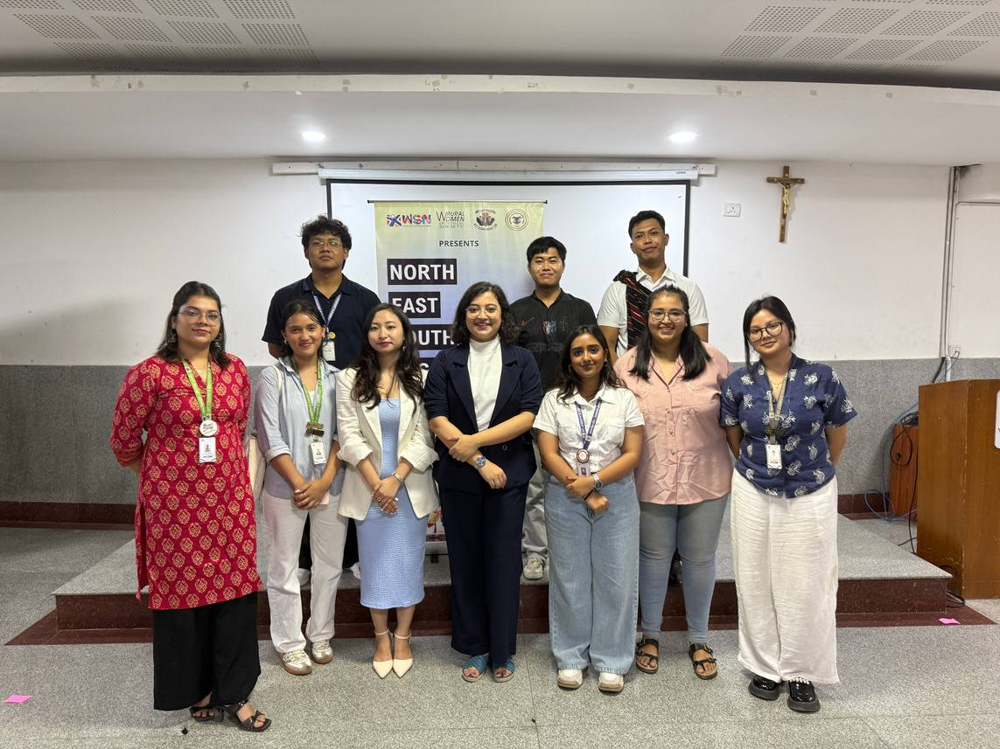

What young people were up against
Young people from the North East living in Bengaluru often face everyday discrimination and know little about their legal rights. Community groups are divided by identity and often struggle to mobilise.
What the grant made possible
The North East Youth Civic Engagement (NYCE) initiative, run with the North East and Tibetan Students Forum at St. Joseph's University, held legal rights workshops and sensitisation sessions. Students from different tribes and states came together around shared issues, and young organisers grew into leaders.
Mang: leading from the background
Doulianmang Hangshing, known as Mang, was General Secretary of the students' forum when the initiative began. He led volunteers and logistics at the first event and, even after graduating and starting work, returned to organise the closing workshop on legal rights in university spaces, keeping the team motivated with discipline and kindness.
Lalcha: law as a tool for the community
Thangminlal Haokip, known as Lalcha, grew up in Bengaluru after leaving Manipur as a child, studied at the National Law School of India University and now practises in Bengaluru. He facilitated the legal rights workshops and sensitisation sessions, combining legal knowledge with lived experience and practical advice, and bridged conversations with people outside the community.
“Through the NYCE workshops, we came together and we dwelled on issues that affected us all.”Mang, organising committee member